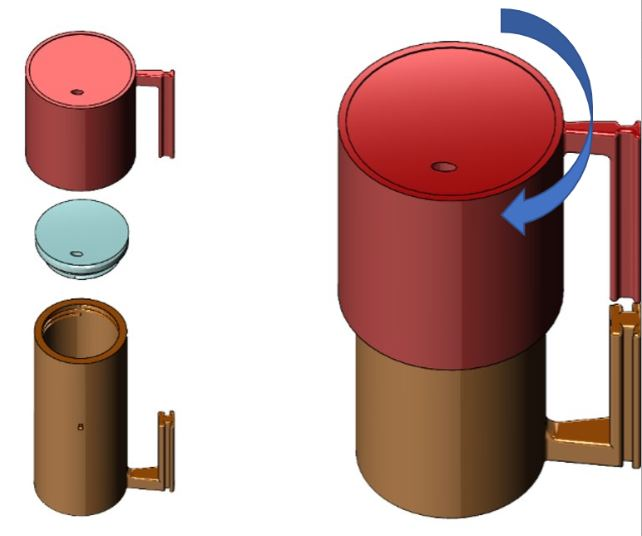
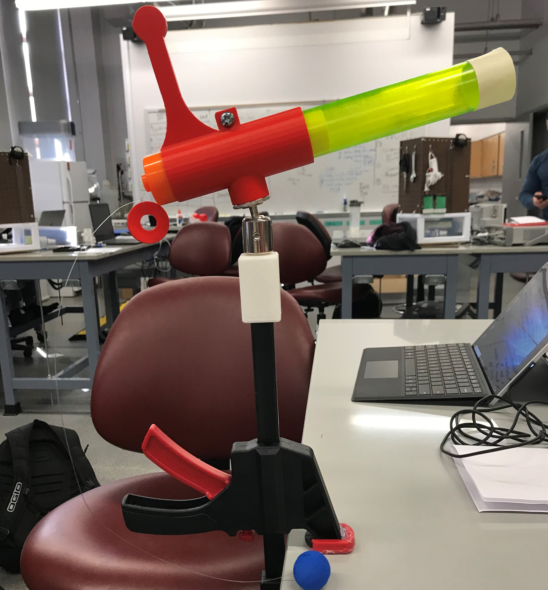
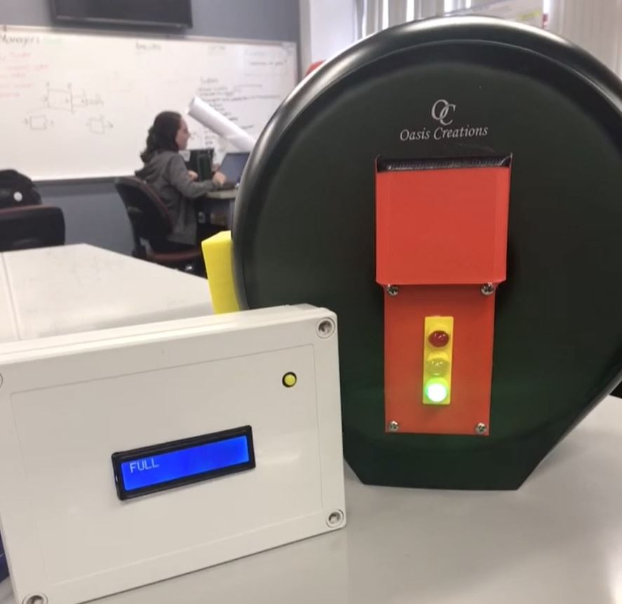

Portfolio
No Spill Twist Mug
The product was design during Junior Design in the spring of 2021. This device targets those with cerebral palsy. The No Spill Twist Mug looks to avoid the mess with the clever design. It prevents liquid from spilling our of the drink in the case the user drops the mug, while also allowing the user to indepdently drink their beverage.
Spiderman Web Cannon
This product was created during Freshman Design Studio for our client: Reach Services. The intent of this device is improve gross and motor function for children through an interactive game. In the game, there are different targets of spiderman villans that the child aims atoy launcher at to eliminate. The user aims and pulls the trigger to knock down all of the spiderman villians. The product was created using 3D prining and time spent in the machine shop.
TinkleTimes
This product was produced in Freshman Design Studio with a group of peers. Tinkletimes is used to communicate the amount of toilet paper remaining in a stall. Not only does the front of the dispenser light up green for good, yellow for a little left, and red for all out, a box is used to communicate with the device to tell the custodian the status of each dispenser. This product can be used in schools, airports, or any kind of bathroom to help provide the users and custodians with heplful information.